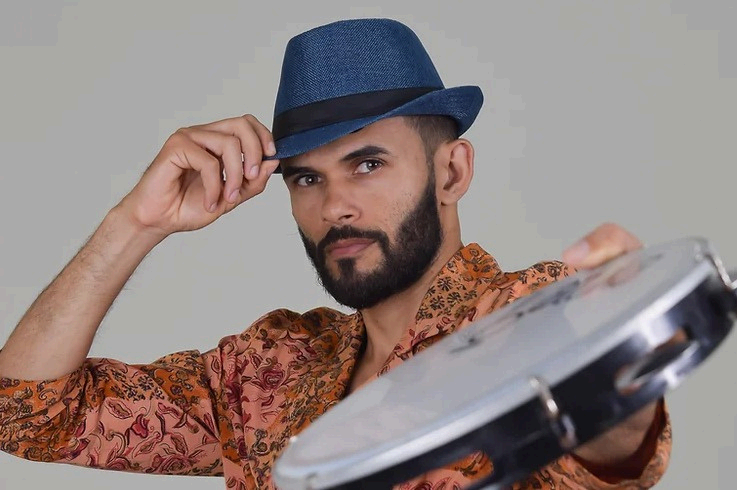
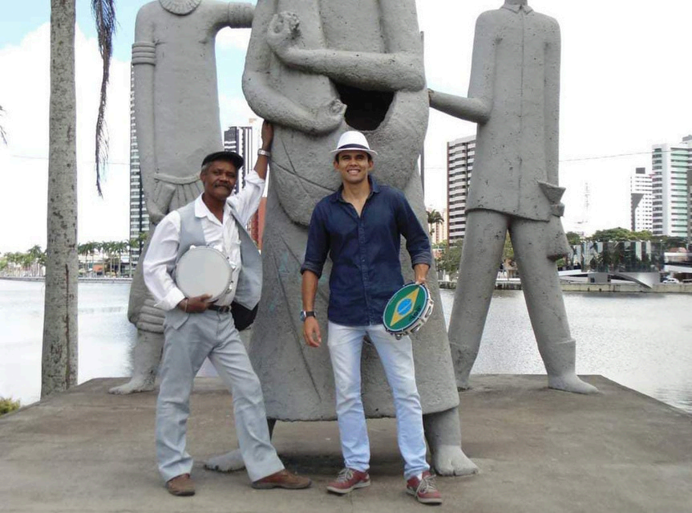
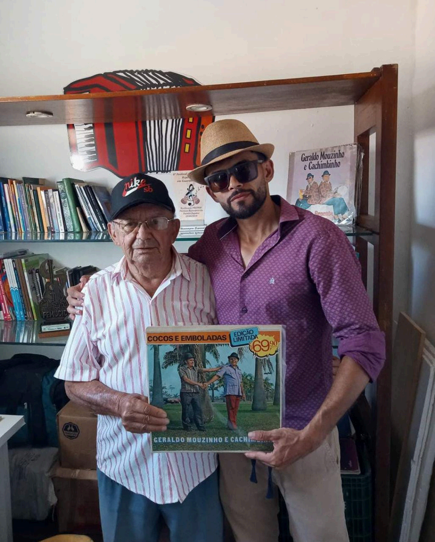
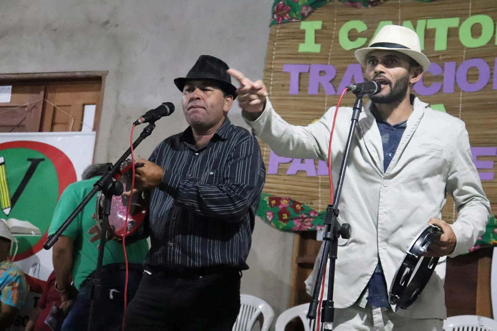
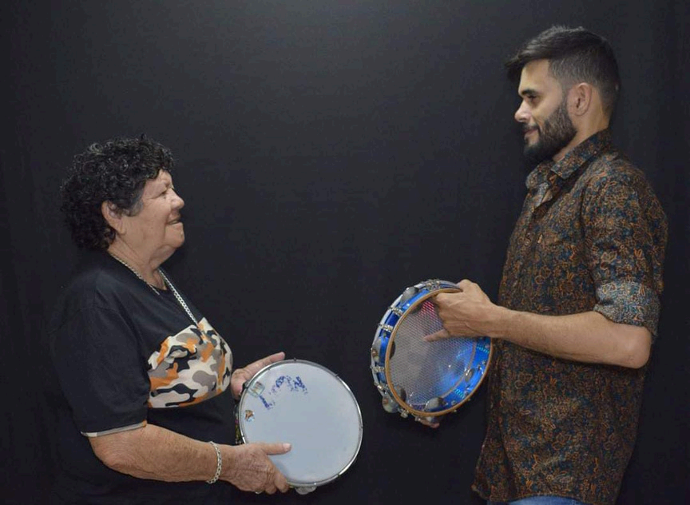
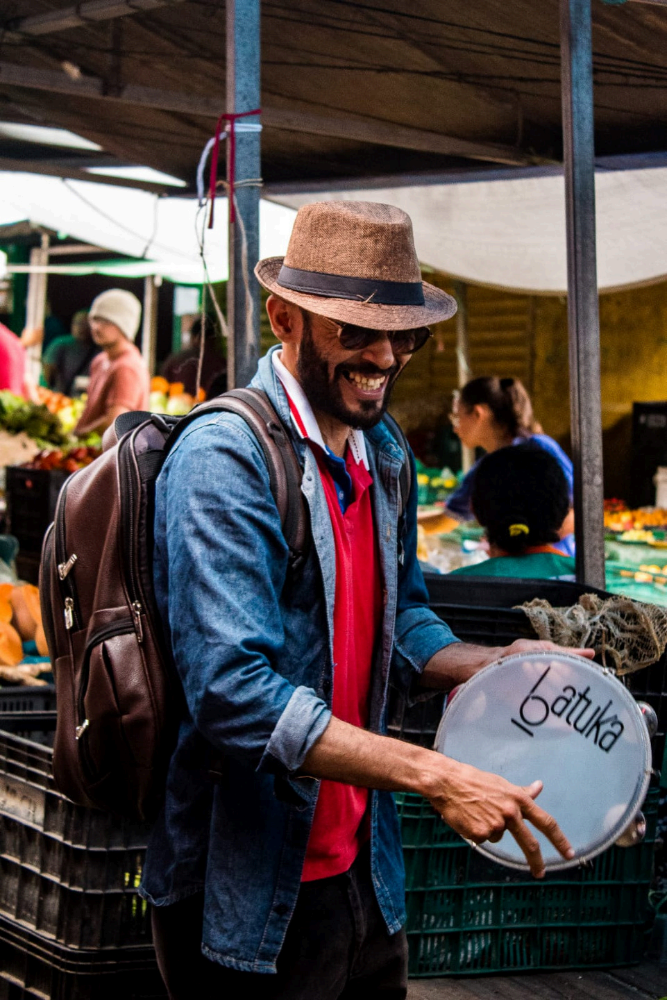

Sou Robério Silva, o Condor
Um poeta embolador de coco nascido em 1986 em João Pessoa, Paraíba. Desde criança tive contato com a Literatura de Cordel, as declamações e as cantorias.
Meu Mestre na arte de coco de embolada foi o poeta pernambucano Lua Nova (in memoriam), com quem aprendi várias modalidades da embolada, métrica e rimas da poesia popular. Atualmente, possuo um canal no Youtube onde divulgo a embolada de coco, acompanhado de vários cantadores e poetas.

Minhas Parcerias
Artistas e poetas com quem tenho a honra de compartilhar o palco

Lua Nova
Meu mestre (in memoriam), poeta pernambucano que me ensinou as modalidades da embolada, métrica e rimas da poesia popular.

Geraldo Mouzinho
Grande parceiro nas emboladas de coco, juntos levamos a tradição nordestina para diversos palcos e apresentações.

Palito
Cantador e poeta popular, parceiro nas emboladas e na defesa da cultura nordestina, levando rima, ritmo e tradição ao povo.

Lindalva
Parceira nas cantorias e emboladas, mantendo viva a chama da poesia nordestina através de cada verso.

Sobre Minha Trajetória
Nascido em João Pessoa, Paraíba, em 1986, cresci cercado pela rica cultura popular nordestina. Desde criança, as rimas do cordel e os ritmos do coco de embolada fizeram parte da minha vida.
Tive a honra de ser discípulo do saudoso Lua Nova, poeta pernambucano que me ensinou os segredos da embolada, a métrica precisa e as rimas que dão vida à poesia popular. Com ele, aprendi que cada verso carrega a alma do nosso povo.
Hoje, através do meu canal no YouTube, compartilho essa arte ancestral com o mundo, mantendo viva a chama da cultura nordestina e levando a embolada de coco para novos públicos.
Entre em Contato
Tem algum projeto ou quer agendar uma apresentação? Fale comigo!
Localização
Campina Grande - PB
condorcantador@gmail.com
Telefone
(83) 9 8831-3946